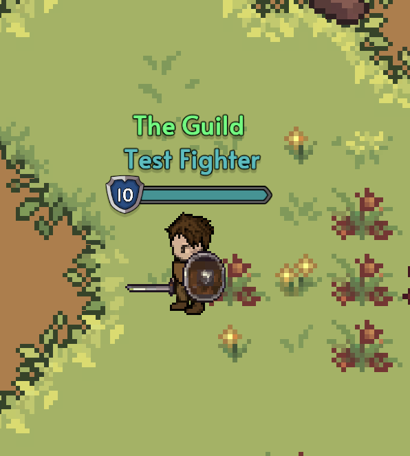

Guildas em Grind Hero
As guildas são um componente essencial da experiência social e competitiva em Grind Hero. Juntar-se ou criar uma guilda permite que os jogadores colaborem, participem de atividades em grupo, conquistem territórios e enfrentem desafios maiores.

Sistema de Guild
O sistema de Guild em Grind Hero foi projetado para facilitar a organização e cooperação entre jogadores, oferecendo diversas funcionalidades:
Funcionalidades Básicas
- Criar e excluir guildas
- Adicionar e remover membros
- Modificar cargos de membros
- Sair de uma guild
- Alterar o nome da guild
Hierarquia de Guild
Existem três cargos dentro de uma guild, cada um com suas próprias permissões:
- Líder: Pode excluir a guild, alterar seu nome, adicionar/remover membros e alterar cargos.
- Capitão: Pode adicionar e remover membros da guild.
- Membro: Participante comum da guild, sem permissões administrativas.
Estatísticas e Comunicação
O sistema de Guild também oferece:
- Janela de informações mostrando todos os membros e o tempo que fazem parte da guild
- Contador de kills e deaths para cada membro (apenas contabiliza interações com membros de outras guilds)
- Chat exclusivo para membros da guild, facilitando a comunicação interna
Futuras Implementações
O sistema de Guild será expandido no futuro para incluir:
- Ranking de guilds baseado no sistema de kills/deaths
- Sistema de guerra entre guilds mais estruturado
- Benefícios e recompensas exclusivas para membros de guilds
- Territórios controláveis e disputas territoriais
Formar uma guilda forte e organizada será crucial para dominar em Grind Hero, especialmente nos servidores PvP.